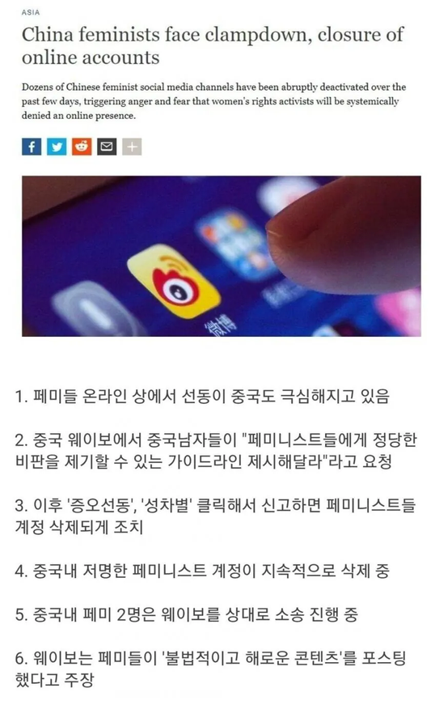

https://www.fmkorea.com/best/10308467435

https://www.fmkorea.com/best/10308467435

중국보다도 못한 나라가 있다?
저게 정말 선진국임 ㅋㅋㅋ
병신들은 페미가 중국에서 퍼뜨린거로 선동까지 하던데 좆지영을 퍼뜨린게 한국이란걸 잊은듯
맞아 중국은 갈라치기 댓글부대만 운영했지
저러면 당에서 가만 안두지
우린 자유도 없는데 페미들이 날뛰네
PC와 페미사상 자체가 사회주의진영에서 냉전시기 자유민주진영의 발전저해를 위해서 독으로 풀었단 얘기도 있음.
페미가 발생한건 여성의 참정권 쟁취를 목표로 역사 100년이 넘은건 맞지만 이게 완료된 1960년대 이 목표를 이루며, 방향성을 잃고 약화됬을때, 이때 이걸 이용한게 마르크스공산주의와 레즈집단이 뛰어들고 융합되며 레디컬페미의 새로 기틀을 만든게 현대의 페미니즘이라고 들음, 페미니즘의 성서같은 유명저서는 작가를 찾아보면 모두 레즈비언들임, 억압자와 피억압자로 나누는 투쟁방식과 내용은 마르크스주의에서 따와서 만든거.
목표는 정통적 가족의 해체와 사회시스템의 교란임.
ㄹㅇ 그 끝에는 가족과 국가의 해체 밖에 없더라. 지네조차 자기가 원하는 유토피아가 뭔지 그걸 어떻게 유지할 수 있는지 모르는 것 같음
ㅇㅇ 러시아 간첩이 프랑스 교수가 됨
그래서 교묘하게 페미 논리를 만들었음
주작같죠? 실화임
사람들 이거 잘 모름
ㄹㅇ
1. 베놈 문서(Venona Project)와 KGB의 침투 실태
냉전기 미 정부가 구소련의 암호 통신을 해독한 '베놈(Venona) 기밀문서'가 1990년대 해제되면서, 소련 정보국(KGB/GRU)이 미국 내 다양한 진보·좌파 단체와 여성·민권 운동계에 실제로 침투하고 자금을 대며 영향력을 행사한 사실이 확인되었습니다.
2. 베티 프리단(Betty Friedan)의 마르크스주의 및 친소 행적 논란
현대 페미니즘의 포문을 연 《여성의 신비(The Feminine Mystique, 1963)》의 저자이자 미국최대여성단체(NOW)의 설립자인 베티 프리단은 사후에 그의 실제 이력이 밝혀지며 큰 파장을 일으켰습니다.
위장된 정체성: 책에서는 자신을 단순히 '가사에 지친 평범한 중산층 주부'로 포장했으나, 역사학자 다니엘 호로비츠(Daniel Horowitz)의 연구에 의해 그녀가 학창 시절부터 급진 마르크스주의 조직과 미국 공산당(CPUSA) 계열 매체에서 활동했던 노동 운동가였음이 밝혀졌습니다.
3. '자유민주주의 해체'를 폭로한 유리 베즈메노프의 증언
구소련 KGB의 선전 담당 공작원이었던 유리 베즈메노프(Yuri Bezmenov)는 1980년대 미국으로 망명한 뒤, 소련이 어떻게 미국 사회를 이념적으로 전복(Ideological Subversion)했는지 상세히 폭로했습니다.
탈도덕화(Demoralization) 공작: 소련 정보국의 핵심 목표는 군사 간첩이 아니라, 미국 내 교육기관, 언론, 민권·여성 단체에 문화적 마르크스주의와 극단적 이념을 주입하여 한 세대(15~20년)에 걸쳐 전통적 가치관(가족, 종교, 애국심)을 무너뜨리는 것이었습니다.
찾아보면 실제 밝혀진 사례들이 많음
페미가 지배자와 반지배자로 사회를 조화가 아니라 이분법으로 나눠 사회주의 프롤레타리아혁명 논리와 주장, 과정이 비슷한데...
그래서 현실 프롤레타리아 혁명위에 건설된 공산국가들이 일부 독재자들 아래 모두 프롤레타리아가 되는 과정이 현재의 페미들이 본인들의 유리바닥을 없애는 과정과 많이 비슷해 보임. 페미운동해서 부자와 가난한자가 모두 가난해지듯 그 피해는 남성뿐만아니라 여성도 마찮가지인거...그래서 페미 나올때부터 이건 남성의 일부 파이를 먹을수 있겠지만 동등한 의무까지 전가되어 여성이 더 피해가 클거다라고 한 이유임. 진짜 페미나오고 남초여초를 대표하는 펨코와 여시가 아예 다른 이세계 사람들 같고, 한참 만날시기의 남녀관계가 대결구대가 커지고 너무 팍팍해짐. 한창시기의 이런 대결구도가 좀 안타깝다. 이걸 지원하고 본인들 지지세력으로 키우는 놈이 나쁜놈들임
너네도 정화좀 되고 나면 출산율 올라갈꺼다.
중국 출산율 오르겠는데 ㅋㅋㅋ
이거죠
중국에 페미니즘이 더 퍼지길 바란다 남녀노소 동서남북 갈려서 신나게 싸워라
중국여자애들이 페미할 이유가 있나싶음
저기는 진짜 성비가 완전박살나서 퐁퐁남 아니면 연애/결혼이 불가능한 수준이던데
인간의 욕심은 끝이 없는 법
뉴스에서보는행동하면 그냥 중국에서 지워지는 것아님?
근데 중국은 극단적 남초라서 이미 연애시장에서 여자가 압도적 권력을 가지고 있는데
페미가 득세하는 이유가 뭐지?
더 받기위해서지
중국은 원래 부녀자들이 강성이던데.. 유튭만 봐도 장인이 차준다는데 사위가 먹을게요 라고 했다고 얼굴에 침뱉던데
페미와 공산당
곧 착해지겠누 ㅋㅋㅋ
공산권 국가들이 자유민주주의 국가들에 독을 푼게 페미니즘의 시작이다보니.. 지들은 집안단속 제대로 하는거
중국도 저출산에 엄청 민감한데
페미가 저출산을 선도한다는 이미지만 먹여주면 당이 알이서 조져줄꺼같은데 ㅋㅋ
페미는 성평등을 앞세워 자기 이득을 취하는 건데 반박하면 성차별주의자 ㅇㅈㄹ 하니ㄹㅇㅋㅋ
이럴땐 한국보다 났네
한국은 그.. ㅋ
저출산 해결을 위해 페미 키우기 VS 페미 죽이기
우리나라는 페미 키우기를 선택했고 이제는 꼴페미 수출국이 됨. 서구권에는 4B운동 수출했고 일본에도 일본인인척하면서 전파하려다가 걸렸음ㅋㅋ '82년생 김지영' 중국에서도 번역되어 팔림 ㅋ